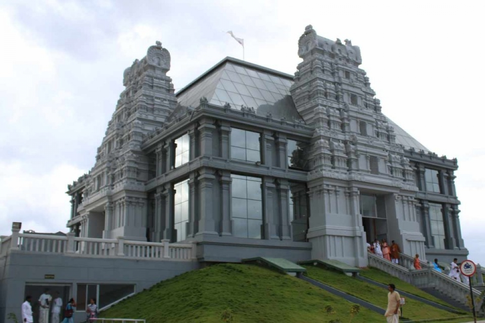

INTRODUCTION
Sri Radha Krishna-Chandra Temple (Kannada: ಶ್ರೀ ರಾಧಾ ಕೃಷ್ಣ ಮಂದಿರ) is one of the largest Krishna-Hindu temples in the world. It is situated in Bangalore in the Indian state of Karnataka. The temple is dedicated to Hindu deities Radha Krishna and propagates monotheism as mentioned in Chandogya Upanishad.
HISTORY
In May 1997, Bangalore ISKCON Temple was inaugurated by the ninth president of India, Shankar Dayal Sharma.[3][2] The society was registered in the year 1978 under the Karnataka Societies Registration Act, 1960. The objectives of the society are derived from the Seven Purposes of ISKCON as stated by Srila Prabhupada.
About temple
Features of the temple
There is a gold-plated dhwaja-stambha (flag post) 17 m (56 ft) high and a gold plated kalash shikhara 8.5 m (28 ft) high. There is free distribution of Sri Krishna prasadam to all visitors during the darshana hours.
Shrines (altars)
- ISKCON Bangalore has six shrines:
- Main deities is of Radha-Krishna
- Krishna Balrama
- Nitai Gauranga (Chaitanya Mahaprabhu and Nityananda)
- Srinivasa Govinda (also known as Venkateswara)
- Prahlada Narasimha
- Srila Prabhupada
Daily ceremonies
The day begins at 4:30 with a ceremony called mangala-arati followed by worship of Tulasi Devi, Sri Narasimha Arati, and Suprabhata Seva for Sri Srinivasa Govinda. Later there is Shringara Darshana Arati, and Japa Meditation session. At 19:00 arati starts, where devotees sing kirtan. In the main temple, the arati is performed by three priests. This arati is followed again by kirtan where devotees can be seen dancing to the rhythm of "Hare Krishna Hare Rama".